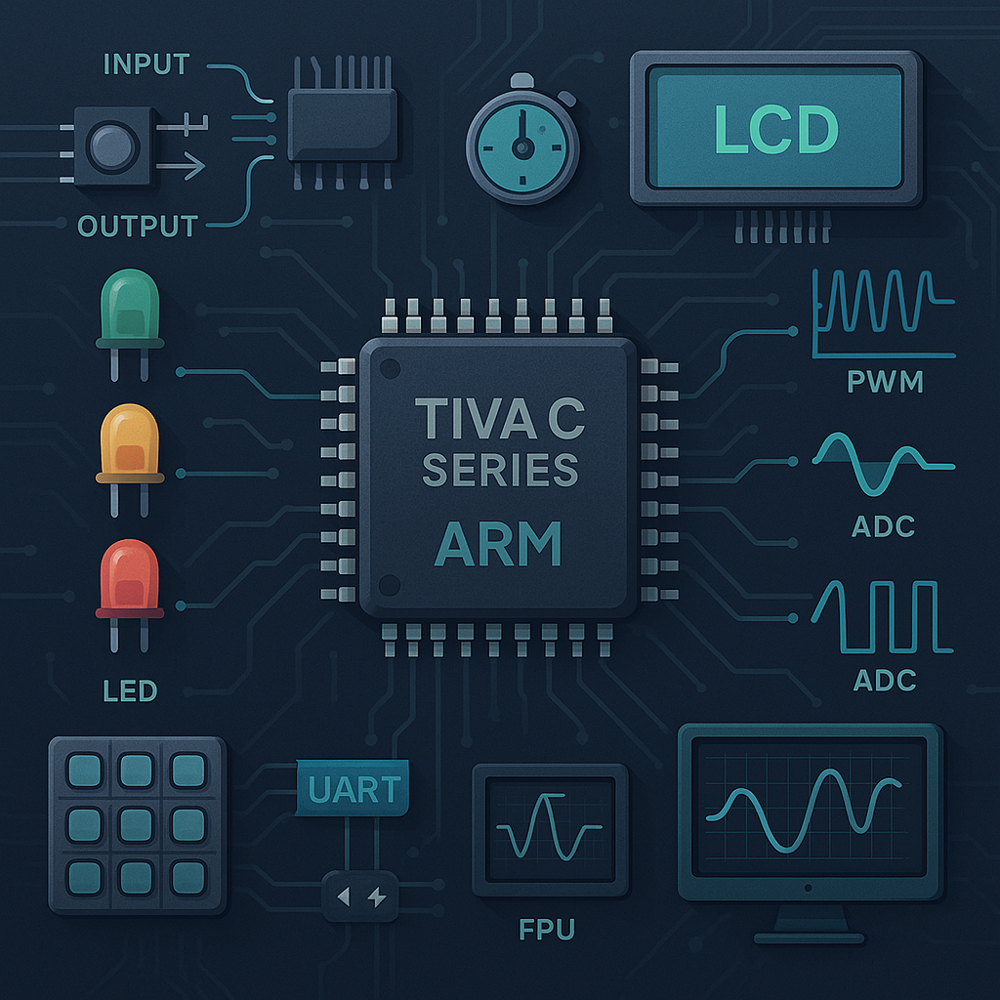

Bu proje, mikroişlemci mimarilerini ve doğrudan donanım programlamayı adım adım öğrenmek isteyenler
için hazırlanmış kapsamlı bir eğitim serisidir. Tiva C serisi mikrodenetleyiciler temel alınarak,
haftalık sistemli ilerlemelerle konular işlenmiş, her hafta uygulamalı örneklerle pekiştirilmiştir.
Başlangıçtan ileri seviyeye kadar sağlam bir temel oluşturmak için ideal bir yol haritası
sunulmuştur.
Tüm detaylı haftalık içeriklere ulaşmak için aşağıdaki "Devamını Oku" butonuna tıklayın.
Hafta 1: Mikroişlemcilere Giriş
Mikroişlemcilerin doğuşu, tarihçesi ve günümüzdeki uygulama alanları detaylandırıldı. Tiva C serisi
MCU mimarisi tanıtıldı. Code Composer Studio kurulumu, ilk "Blinky" projesinin yapılması ve debugger
kullanımı öğrenildi.
Hafta 2: GPIO Yapıları
GPIO pin yapılandırmaları, clock enable işlemleri, register seviyesinde input/output modlarının
kontrolü yapıldı. LED yakma/söndürme ve basit buton okuma devreleri gerçekleştirildi.
Hafta 3: Buton Kullanımı ve Debounce
Butonlardan gelen mekanik bouncing etkisinin teorik açıklaması yapıldı. Yazılımsal debounce
algoritmaları geliştirildi. Butona basıldığında LED yak/söndür uygulamaları kodlandı.
Hafta 4: Interrupt Sistemi
Polling ile interrupt arasındaki farklar anlatıldı. NVIC ayarları ve GPIO interrupt'larının kurulumu
gerçekleştirildi. Butona basıldığında interrupt tetikleyen sistemler geliştirildi.
Hafta 6: LCD Uygulamaları
16x2 karakter LCD modülünün low-level register ayarları ile sürülmesi sağlandı. 4-bit ve 8-bit
iletişim modları kullanıldı. Buton matrisi üzerinden alınan verilerin LCD'ye yazdırılması
projelendirildi.
Hafta 7: Timer Kullanımı
Timer modüllerinin normal zamanlama ve PWM modlarında kullanımı incelendi. Timer interrupt ayarları
yapılarak belirli periyotlarda işlem tetiklemeleri sağlandı.
Hafta 8: UART Haberleşmesi
Asenkron seri haberleşmenin temelleri işlendi. UART konfigürasyonu yapıldı, terminal programı ile
bilgisayardan veri gönderimi/alımı sağlandı. UART ile LED kontrol projeleri geliştirildi.
Hafta 9: ADC Modülü
Analog sinyallerin dijital çevrimi teorik ve pratik açıdan anlatıldı. 12-bit ADC konfigüre edilerek
potansiyometre gibi analog sensörlerden veri okuma uygulamaları yapıldı.
Hafta 10: API'siz ADC Kullanımı
ADC modülü doğrudan register'lar üzerinden kontrol edildi. Sequencer yapısı detaylandırıldı.
Sensörden veri alınıp LCD'ye gösteren bir tam sistem uygulaması geliştirildi.
Hafta 11: Hibernation ve Low Power Modları
Güç yönetimi konuları işlendi. Hibernation modülü aktif edilerek düşük güç tüketimli uygulamalar
tasarlandı. RTC ile zamanlayıcı kurularak sistemin uyandırılması gerçekleştirildi.
Hafta 12: Floating Point Unit (FPU) Kullanımı
Donanımsal kayan nokta birimi (FPU) özellikleri ve konfigürasyonu detaylıca işlendi. Sinüs, kosinüs
gibi matematiksel işlemlerin hızlı hesaplanması sağlandı ve UART üzerinden çıktıları gösterildi.
Hafta 13: PWM Sinyalleri ve ADC Kontrollü PWM
PWM üretimi için Timer modülleri kullanıldı. Duty cycle değişimi ADC'den alınan sensör verisine göre
ayarlandı. LED parlaklık kontrolü gibi gerçek dünya uygulamaları geliştirildi.